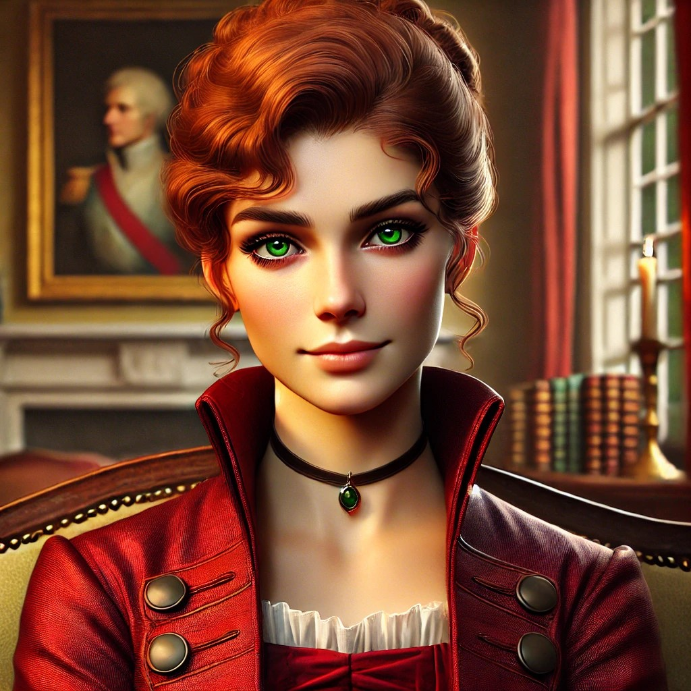

Miss Beatrice Harrow
Physical Description
Mid-twenties, auburn-haired, and effortlessly poised. Moves with the fluid economy of someone who has trained with a blade since childhood. Known for her sharp tongue and sharper blade.
Background
Miss Beatrice Harrow is one of the few female field agents actively working for the Order_of_St_Aelfric. A master swordswoman and skilled investigator, she resides at Hartwell_House between assignments.
Beatrice was trained in fencing from a young age — an unusual accomplishment for a woman, made possible by a father who valued capability over convention. She came to the Order’s attention after a field incident left her previous mentor dead and Beatrice alive with knowledge no civilian should possess. Lady_Honoria_Lyndhurst recruited her personally.
Cynical but not unkind, she carries the weariness of someone who has seen the Order’s work up close and survived it with her wit intact. Her cynicism is earned rather than performative — she has survived enough to know what the work costs.
Statistics
| Stat | Value |
|---|---|
| STR | 55 |
| CON | 60 |
| SIZ | 50 |
| DEX | 75 |
| INT | 70 |
| POW | 65 |
| APP | 60 |
| EDU | 60 |
| HP | 11 |
| SAN | 65 |
| MP | 13 |
| MOV | 9 |
| Luck | 55 |
| DB | 0 |
Skills
- Fighting (Sword) 85%
- Spot Hidden 70%
- Dodge 70%
- Stealth 65%
- Psychology 60%
- Ride (Horse) 60%
- Listen 60%
- Firearms (Pistol) 55%
- Fast Talk 55%
- Intimidate 55%
- Charm 50%
- Climb 50%
- Fighting (Brawl) 50%
- First Aid 45%
- Library Use 45%
- Survival (Urban) 45%
- Persuade 45%
- Disguise 40%
- Locksmith 40%
- Throw 40%
- Occult 35%
- Navigate 35%
- Cthulhu Mythos 06%
Weapons
| Weapon | Skill | Damage | Range | Notes |
|---|---|---|---|---|
| Rapier | Fighting (Sword) 85% | 1d6+1+DB | Touch | Impales on Extreme; may parry |
| Light Sword (fencing foil) | Fighting (Sword) 85% | 1d6+DB | Touch | Impales on Extreme; training weapon |
| Flintlock Pistol | Firearms (Pistol) 55% | 1d6+1 | 10 yds | 1/4 rounds to reload |
| Knife, Small | Fighting (Brawl) 50% | 1d4+DB | Touch | Concealed |
| Fisticuffs | Fighting (Brawl) 50% | 1d3+DB | Close | — |
Equipment
- Practical but well-tailored clothing suited to both society and fieldwork
- Rapier (carried discreetly; her preferred weapon)
- Flintlock pistol & powder horn
- Concealed knife (boot or sleeve)
- Lockpicks
- Leather satchel with field notes and sketches of prior investigations
- Order-issue cold iron blade
Roleplaying Beatrice
Speaks with dry, cutting wit — never wastes words. Respects competence and despises pretension. Tests new acquaintances with pointed remarks to see how they respond under pressure. Moves through both high society and dangerous situations with the same unflappable poise.
In combat, she is precise and controlled — a fencer’s discipline rather than a brawler’s aggression. She fights to end confrontations quickly and cleanly.
She sees potential in Marina_Garrick but will not say so until Marina has earned it. She and Mr_Benedict_Fairfax share loaded glances and an unspoken understanding that neither has acknowledged openly.
Campaign History
- Summer 1813: Met Marina_Garrick in the Hartwell House drawing room during Marina’s first evening. Greeted her with dry amusement: “Ah. Our new recruit.” Offered practical perspective on the realities of Order life.
- Winter 1813 (Training Montage): One of six instructors who trained the investigators at Hartwell House between The Long Corridor and The Scandal Beneath the Stage. Fellow instructors: Mr_Tobias_Whitmore, Mr_Alfred_Smythe, Miss_Dorothea_Bexley, Mr_Benedict_Fairfax, Lady_Wilhelmina_Danvers.
Connections
- Location: Hartwell_House
- Organisation: Order_of_St_Aelfric (field agent)
- Mentor: Lady_Honoria_Lyndhurst (recruited her personally)
- Associated NPCs: Mr_Tobias_Whitmore, Mrs_Agnes_Rothwell, Miss_Eleanor_Finch, Mr_Benedict_Fairfax (fellow Hartwell residents)
Relationships
- Member of Order of St Aelfric — One of the few female field agents actively working for the Order
- Knows Marina Garrick — Met Marina at Hartwell House; sees potential but is not easily impressed
- Associated with Mr Benedict Fairfax — Something unspoken between them — occasionally exchange loaded glances